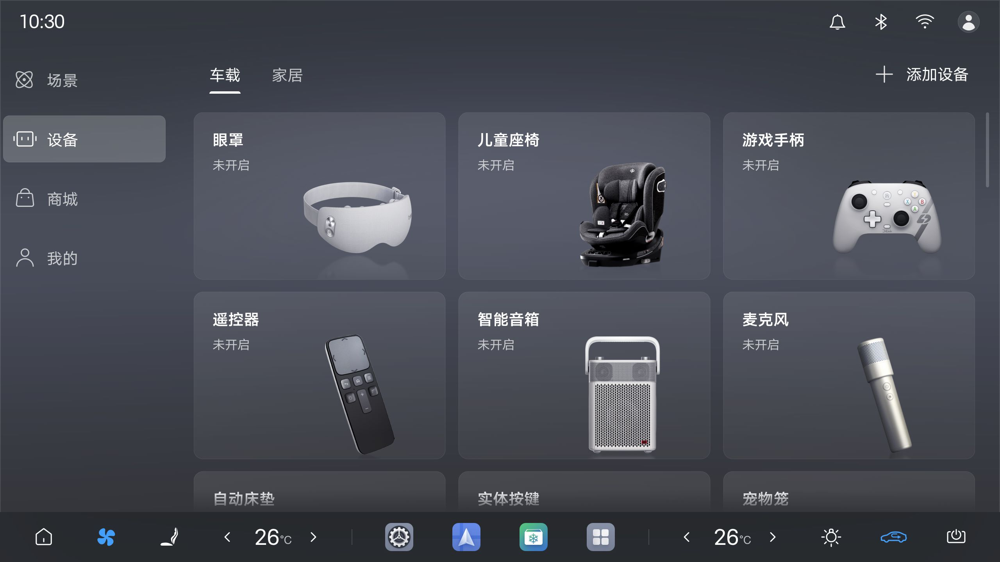
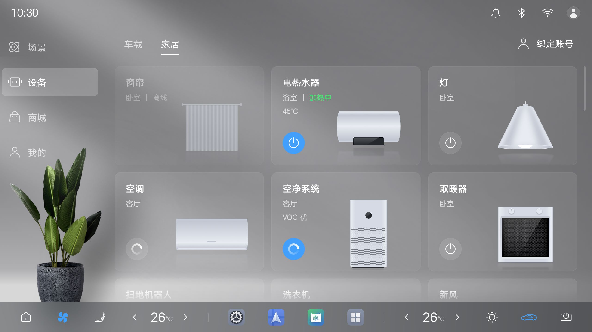
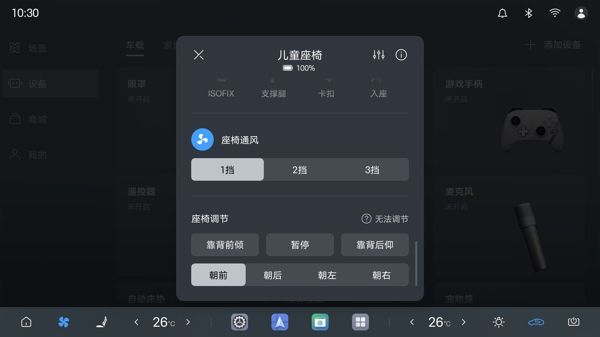
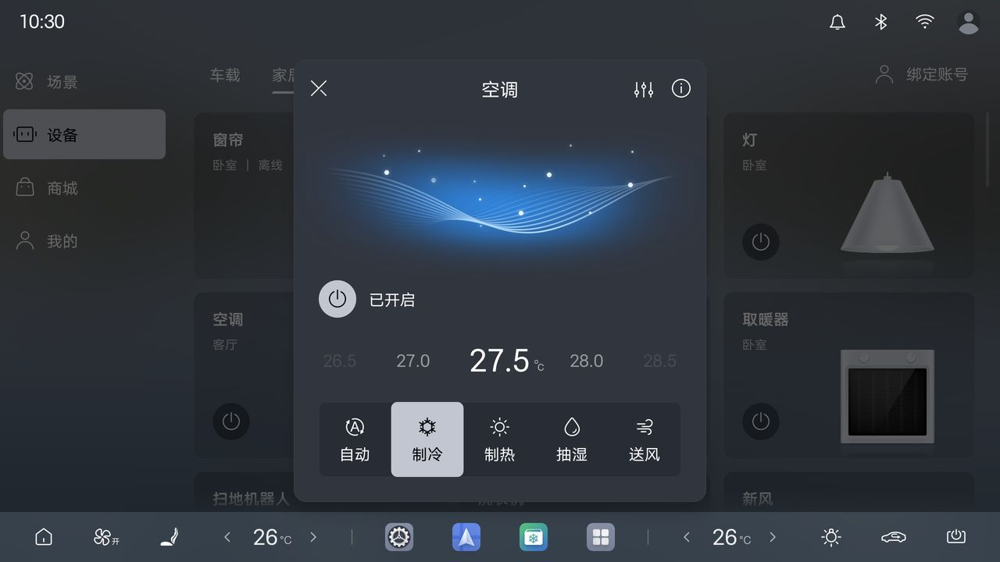
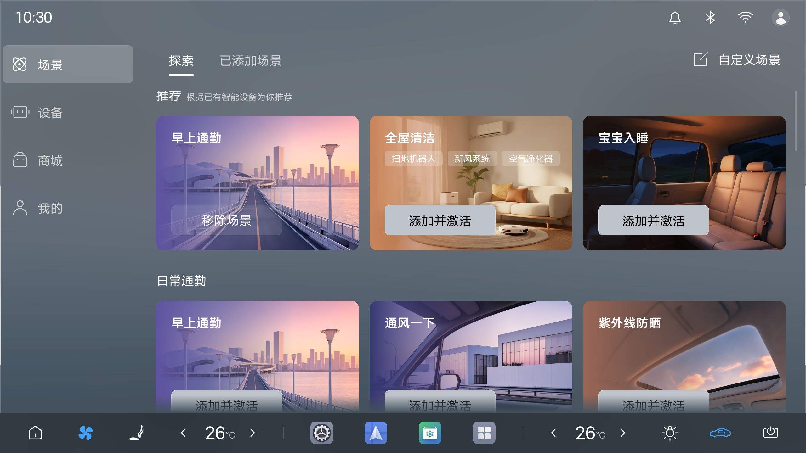
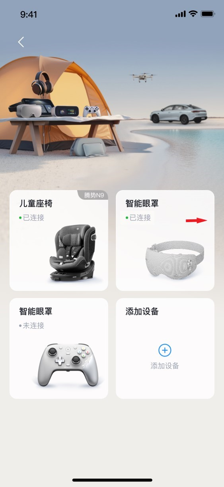
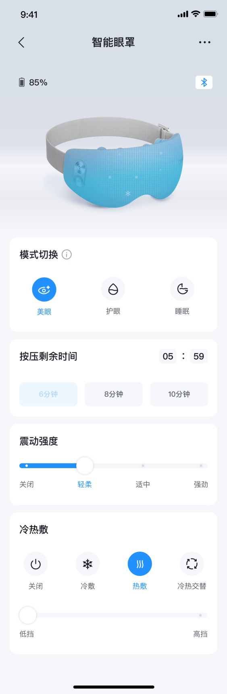
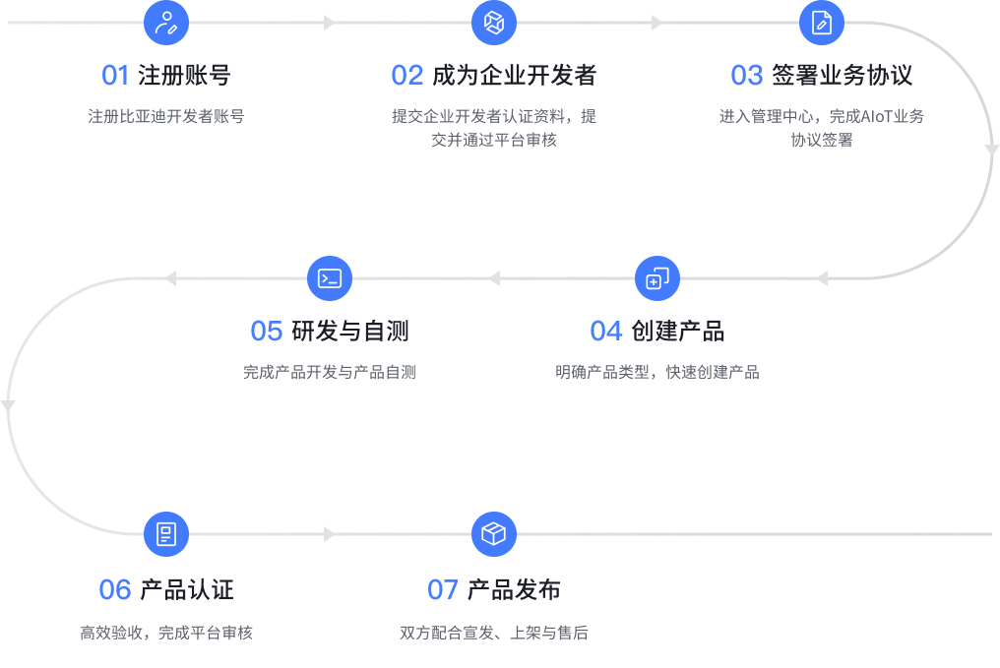

业务简介
比亚迪生态开放平台的AIoT业务，专注于车载场景、车周边场景、远程智能家居场景，为消费类智能硬件开发者提供全栈式技术赋能，打造“人-车-家”无缝联动的开放生态体系。该平台为开发者提供开放的资源、能力及优质的服务，通过整合比亚迪在智能化座舱及IoT领域的垂直技术优势，助力开发者以低成本、高效率的方式实现产品智能化升级，加速融入比亚迪智能出行生态闭环。
1. 您可以得到什么？
接入比亚迪生态开放平台 AIoT业务的产品，能够借助比亚迪车机智慧物联 App 提供的能力，能实现车载IoT设备的统一管理，车与设备之间的联动赋能，实现智能设备“购买-控制-联动”的全链路打通；能够深度适配比亚迪智能语音系统（如"小迪"语音助手）；能够通过自定义智能场景，和其他接入比亚迪生态开放平台 AIoT业务的智能产品间形成智能联动，最终构建真正以汽车用户为中心的智能生态体系。手机侧车主App也提供智慧物联的功能，方便用户远程查看直连接入的IoT设备状态，或者将某些IoT设备从车内携带到户外等远车场景中使用。
1.1 车机侧App控制
车机端智慧物联 App 是一个用于集中控制智能IoT硬件产品的 App，方便用户控制、查询和管理接入比亚迪生态开放平台 AIoT业务的硬件产品。开发者可依据“比亚迪AIoT业务接入指南”的方式接入平台，即可完整获取智慧物联 App 的能力。下图依次为车机端智慧物联App的IoT设备列表界面、IoT设备详情界面、场景联动界面。
| 车载直连IoT设备列表 | 远程家居IoT设备列表 |
|---|---|
 |  |
图 1-1 IoT设备列表
| 车载直连IoT设备详情 | 远程家居IoT设备详情 |
|---|---|
 |  |
图 1-2 IoT设备详情

图 1-3 场景联动
1.2 手机侧App控制
手机端比亚迪App的智慧物联模块，支持用户查询和管理直连接入比亚迪生态开放平台 AIoT业务的硬件产品。开发者依据“比亚迪AIoT业务接入指南”介绍的方式接入平台，即可获取手机侧App智慧物联的能力。下图依次为手机端比亚迪App智慧物联模块的IoT设备列表界面、IoT设备详情界面。


图 1-4 比亚迪App智慧物联页面
2. 您如何接入本业务?
如果您是消费类硬件制造企业，如果您有意向把自己的产品智能化赋能，并推向广泛的比亚迪车主，欢迎您立即加入比亚迪生态开放平台AIoT业务大家庭，共同打造极致的智能出行体验。AIoT业务接入方式分为直连接入、云云接入、云设备接入，不同接入方式适用的范围和场景如下表 2-1 。
| 接入方式 | 通信方式 | 适用场景 | 举例 |
|---|---|---|---|
| 直连接入 | BLE/BT | 车机大屏、车机智能语音控制的车载低功耗智能设备 | 车内的儿童安全座椅、按摩眼罩、游戏手柄、麦克风等 |
| Wi-Fi（待开放） | 车机大屏、车机智能语音控制的，数据传输需要高带宽的智能设备 | 宠物安全座（视频显示） | |
| 云云对接 | 三方云OAuth2授权比亚迪云 | 车端远程控制家中智能设备 | 车机App和车机智能语音控制家中智能家电，如空调、扫地机器人等 |
| 云设备接入 | 近场BLE，远场4/5G、NB-IoT | 某些智能设备近车连接，远车使用 | 便携类车 |
表 2-1 AIoT业务多种接入方式
3. 您如何接入本业务?
如果您的智能硬件产品适用于车载场景或近车场景，推荐您使用直连方式接入，具体操作可依据开放平台AIoT业务接入指南迅速接入。下图是AIoT业务接入的流程图，适用于所有接入方式。

图 2-1 AIoT业务接入流程
3.1 注册账号
您需要注册比亚迪开发者账号。
3.2 成为企业开发者
AIoT业务面向企业开发者，需要您提交企业开发者认证资料，并通过平台审核。
3.3 签署业务协议
您首次进入『管理中心-AIoT服务平台』，需要完成《比亚迪AIoT业务服务协议》和附件协议（如有）的签署，获得AIoT业务开发者权限。
3.4 创建产品
您需要明确产品类型，快速创建产品，申请ModelId，然后创建物模型并通过平台审核。详见创建产品和功能定义章节。
3.5 研发与自测
根据AIoT业务开发者权限，您可以从比亚迪生态开放平台获取AIoT业务相关软件服务包，例如软硬件协议、规范、调试与自测工具。
- 直连接入的方式，可进行开发和自测IoT设备的固件版本，自测成功后，测试报告可从短距IoT协议测试助手上传至比亚迪生态开放平台，详见固件开发和产品自测章节。
- 云云对接的方式，需要受邀的三方企业和比亚迪之间联调，三方企业可依据平台开放的协议进行开发，其中，开放平台为云云对接提供了web端云接入流程，以及测试环节，详见云云对接套件。
- 云设备接入的方式，本质是：直连授权+云云接入，开放平台也提供了相关协议和示例代码给企业开发者，通过双方联调完成测试环节，详见云设备接入套件。
3.6 产品认证
比亚迪为开发者提供AIoT业务产品测试和验收的服务。其中，对直连接入的产品进行全面检查、测试和评估，以确定产品是否符合预定的规格、标准、质量要求和用户期望，主要包括“产品测试和检验”和“三方认证材料审核”两部分。只有通过产品验收认证的所有环节，IoT产品才可以发布和上架。详见产品认证章节。
为了在车机智慧物联App更加专业地展示您的智能设备，您需要在开放平台的高阶配置，提交产品说明书、产品主图、产品卖点及多媒体素材（图片）等核心信息，多维度展示产品特性。详见高阶配置章节。
3.7 产品发布
您通过比亚迪生态产品测试和验收后，最终由比亚迪发布产品或产品上线。双方配合产品的宣发、上架和售后。比亚迪营销渠道为您开启成功销售新旅程。
注意：产品认证、产品发布的前提是开发者已经成功完成产品开发，并和比亚迪完成一系列商务合作事宜（例如供应商资质审核和商务协议签署）。